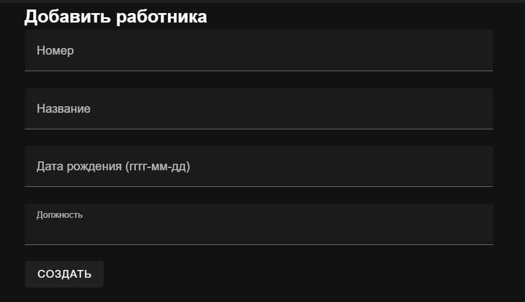

Работа с сокетами
Задание 1
Реализовать клиентскую и серверную часть приложения. Клиент отсылает серверу сообщение «Hello, server». Сообщение должно отразиться на стороне сервера. Сервер в ответ отсылает клиенту сообщение «Hello, client». Сообщение должно отобразиться у клиента. Обязательно использовать библиотеку socket. Реализовать с помощью протокола UDP.
Выполнение
Реализация сервера
import socket
# HEADERSIZE = 4
# AF_INET - IPv4
# SOCK_STREAM - TCP
# SOCK_DGRAM - UDP
def main():
server_socket = socket.socket(socket.AF_INET, socket.SOCK_DGRAM)
server_socket.bind(('localhost', 9090))
while True:
data, client_address = server_socket.recvfrom(1024)
if data:
message = data.decode('utf-8')
print(f"Received message from {client_address}: {message}")
server_socket.sendto("Hello client!".encode("utf-8"), client_address)
if __name__ == "__main__":
main()
Реализация клиента
import socket
def send_and_receive_message():
client = socket.socket(socket.AF_INET, socket.SOCK_DGRAM)
server_address = ('localhost', 9090)
try:
client.sendto("Hello, server!".encode('utf-8'), server_address)
resp, _ = client.recvfrom(1234)
print("Response from server:", resp.decode("utf-8"))
except Exception as e:
print("Error:", str(e))
finally:
client.close()
if __name__ == "__main__":
send_and_receive_message()
Пример работы
Задание 2
Реализовать клиентскую и серверную часть приложения. Клиент запрашивает у сервера выполнение математической операции(поиск площади параллелограмма), параметры, которые вводятся с клавиатуры. Сервер обрабатывает полученные данные и возвращает результат клиенту.
Выполнение
Реализация сервера
import socket
def main():
server = socket.socket(socket.AF_INET, socket.SOCK_STREAM)
server.bind(('localhost', 9999))
server.listen(2)
print(f"Server is running on http://localhost:9999")
while True:
client, address = server.accept()
a, b = client.recv(1024).decode('utf-8').split(',')
data = str(int(a) * int(b))
print(data)
client.send(data.encode('utf-8'))
client.close()
if __name__ == '__main__':
main()
Реализация клиента
import socket
def main():
client = socket.socket(socket.AF_INET, socket.SOCK_STREAM)
try:
client.connect(('localhost', 9999))
a = input('Введите высоту параллелограмма: ')
b = input('Введите длину стороны параллелограмма: ')
data = a + ',' + b
client.send(data.encode('utf-8'))
print('Площадь параллелограмма равна: ' + client.recv(1024).decode('utf-8'))
except Exception as e:
print('Error: ', str(e))
finally:
client.close()
if __name__ == '__main__':
main()
Пример работы
Задание 3
Реализовать серверную часть приложения. Клиент подключается к серверу. В ответ клиент получает http-сообщение, содержащее html-страницу, которую сервер подгружает из файла index.html.
Выполнение
Реализация сервера
import socket
def get_response():
try:
with open('index.html') as file:
content = file.read()
except FileNotFoundError:
content = "<html><body><h1>File index.html isn't found</h1></body></html>"
response = f"HTTP/1.1 200 OK\r\nContent-Length: {len(content)}\r\n\r\n{content}"
return response
def main():
server = socket.socket(socket.AF_INET, socket.SOCK_STREAM)
server.bind(('localhost', 9999))
server.listen(1)
print(f"Server is running on http://localhost:9999")
while True:
client, address = server.accept()
response = get_response()
client.send(response.encode('utf-8'))
client.close()
if __name__ == '__main__':
main()
Реализация клиента
import socket
def main():
client = socket.socket(socket.AF_INET, socket.SOCK_STREAM)
try:
client.connect(('localhost', 9999))
response = client.recv(1024).decode('utf-8')
print(response)
except Exception as e:
print('Error: ', str(e))
finally:
client.close()
if __name__ == '__main__':
main()
Пример работы

Задание 4
Реализовать двухпользовательский или многопользовательский чат. Для применения с TCP необходимо запускать клиентские подключения И прием и отправку сообщений всем юзерам на сервере в потоках. Не забудьте сохранять юзеров, чтобы потом отправлять им сообщения.
Выполнение
Реализация сервера
import socket
import threading
server = socket.socket(socket.AF_INET, socket.SOCK_STREAM)
server.bind(('localhost', 9999))
server.listen()
clients = []
nicknames = []
def broadcast(message):
for client in clients:
client.send(message)
def handle(client):
while True:
try:
message = client.recv(1024)
broadcast(message)
except:
index = clients.index(client)
clients.remove(client)
client.close()
nickname = nicknames[index]
broadcast(f'{nickname} left the chat.'.encode('utf-8'))
nicknames.remove(nickname)
break
def receive():
while True:
client, address = server.accept()
client.send('Nick'.encode('utf-8'))
nickname = client.recv(1024).decode('utf-8')
nicknames.append(nickname)
clients.append(client)
print(f'Nickname of the client is: {nickname}')
broadcast(f'{nickname} joined the chat.'.encode('utf-8'))
client.send('Connected to the server'.encode('utf-8'))
thread = threading.Thread(target=handle, args=(client,))
thread.start()
print('Server is listening...')
receive()
Реализация клиента
import socket
import threading
nickname = input('Choose a nickname: ')
client = socket.socket(socket.AF_INET, socket.SOCK_STREAM)
client.connect(('localhost', 9999))
def receive():
while True:
try:
message = client.recv(1024).decode('utf-8')
if message == 'Nick':
client.send(nickname.encode('utf-8'))
else:
print(message)
except:
print('An error occurred.')
client.close()
break
def write_message():
while True:
message = f'{nickname}: {input("")}'
client.send(message.encode('utf-8'))
receive_thread = threading.Thread(target=receive)
receive_thread.start()
write_thread = threading.Thread(target=write_message)
write_thread.start()
Пример работы

Задание 5
Необходимо написать простой web-сервер для обработки GET и POST http запросов средствами Python и библиотеки socket.
Выполнение
Реализация сервера
import socket
class MyHTTPServer:
def __init__(self, host, port, server_name):
self._host = host
self._port = port
self._server_name = server_name
self.grades = []
self.subjects = []
def serve_forever(self):
serv_sock = socket.socket(
socket.AF_INET,
socket.SOCK_STREAM,
proto=0
)
try:
serv_sock.bind((self._host, self._port))
serv_sock.listen()
while True:
conn, _ = serv_sock.accept()
try:
self.serve_client(conn)
except Exception as e:
print('Client serving failed', e)
finally:
serv_sock.close()
def serve_client(self, conn):
try:
req = self.parse_request(conn)
if req.method == 'GET':
print("Get request started")
resp = self.handle_get_request(req)
elif req.method == 'POST':
print("Post req started")
resp = self.handle_post_request(req)
else:
resp = self.create_response(405, 'Method Not Allowed', 'Only GET and POST methods are supported.')
self.send_response(conn, resp)
except ConnectionResetError:
conn = None
except Exception as e:
self.send_error(conn, e)
if conn:
conn.close()
def parse_request(self, conn):
request_data = b''
while b'\r\n\r\n' not in request_data:
data = conn.recv(1024)
if not data:
break
request_data += data
if not request_data:
raise ValueError('Invalid request')
request_lines = request_data.decode('utf-8').split('\r\n')
method, path, _ = request_lines[0].split(' ')
headers = {}
for line in request_lines[1:]:
if ':' in line:
key, value = line.split(':', 1)
headers[key.strip()] = value.strip()
if "?" in path:
params = (
{p.split("=")[0]: p.split("=")[1] for p in path.split("?")[1].split("&")}
)
else:
params = None
print(params)
return HTTPRequest(method, path.split("?")[0], headers, params)
def handle_get_request(self, req):
if req.path == '/':
response_body = '<html><body><h1>List of subjects</h1><ul>{}</ul></body></html>'
items = ''.join(
'<li>{} - {}</li>'.format(subject, grade) for subject, grade in zip(self.subjects, self.grades))
response_body = response_body.format(items)
return self.create_response(200, 'OK', response_body)
else:
return self.create_response(404, 'Not Found', 'Page not found')
def handle_post_request(self, req):
if req.path == '/record':
self.grades.append(req.params.get("grade"))
self.subjects.append(req.params.get("subject"))
return self.create_response(200, 'OK', 'Record saved')
else:
return self.create_response(404, 'Not Found', 'Page not found')
def create_response(self, status_code, status_text, body):
response = f"HTTP/1.1 {status_code} {status_text}\r\n"
response += f"Server: {self._server_name}\r\n"
response += "Content-Type: text/html\r\n"
response += f"Content-Length: {len(body)}\r\n"
response += "\r\n"
response += body
return response.encode('utf-8')
def send_response(self, conn, resp):
conn.sendall(resp)
def send_error(self, conn, err):
error_message = f"HTTP/1.1 500 Internal Server Error\r\n\r\nError: {err}"
conn.sendall(error_message.encode('utf-8'))
class HTTPRequest:
def __init__(self, method, path, headers, params):
self.method = method
self.path = path
self.headers = headers
self.params = params
def read_body(self, length):
body = b''
while len(body) < length:
data = self.conn.recv(length - len(body))
if not data:
break
body += data
return body.decode('utf-8')
if __name__ == '__main__':
host = 'localhost'
port = 8000
name = 'UselessStudentServer'
serv = MyHTTPServer(host, port, name)
print("Server listening on port", port)
try:
serv.serve_forever()
except KeyboardInterrupt:
pass
Пример работы
Реализация веб-сервиса для тур-агенств на Django
1. Задача
Целью было создать веб-сервис для управления тур-агенством с использованием фреймворка Django. Сервис должен позволять пользователям регистрироваться, просматривать список туров, делать бронирование, писать отзывы и просматривать список купленных туров.
2. Как выполнялась работа
- Начальная настройка: Создан проект Django под названием
travel_agencyи приложение Django под названиемagency. - Создание моделей: Определены модели в
models.pyдляAgency(Агенство),Tour(Тур),Reservation(Бронирование),Review(Отзыв). - Функции представления: Разработаны представления для стартовой страницы, регистрации, списка туров, их бронирование и написания отзывов, а также фильтрация по странам.
- Сопоставление URL: Сопоставлены шаблоны URL с функциями представления в
urls.py. - Шаблоны: Созданы HTML-шаблоны для каждого представления для отображения данных.
- Стилизация: Применены стили CSS для минималистичного дизайна всех страниц.
- Аутентификация пользователей: Использована встроенная аутентификация пользователей Django для функций регистрации и входа.
- Динамическое содержимое: Включена динамическая генерация URL в шаблонах для навигации.
3. Фрагменты кода
Фрагмент из models.py
class Agency(models.Model):
name = models.CharField(max_length=200)
description = models.TextField(null=True, blank=True)
def str(self):
return self.name
class Tour(models.Model):
name = models.CharField(max_length=200)
agency = models.ForeignKey(Agency, on_delete=models.CASCADE, related_name='tours')
description = models.TextField()
start_date = models.DateField()
end_date = models.DateField()
country = models.CharField(max_length=200)
payment_conditions = models.TextField()
def str(self):
return self.name
Фрагмент из views.py
@login_required
def tour_list(request):
tours = Tour.objects.all()
return render(request, 'tour_list.html', {'tours': tours})
@login_required
def tour_detail(request, tour_id):
tour = get_object_or_404(Tour, pk=tour_id)
return render(request, 'tour_detail.html', {'tour': tour})
Фрагмент из reserve_tour.html
{% extends 'base.html' %} {% block content %}
<h2>Забронировать тур: {{ tour.name }}</h2>
<form method="post">
{% csrf_token %} {{ form.as_p }}
<button type="submit">Reserve</button>
</form>
{% endblock %}
Фрагмент из urls.py
urlpatterns = [
path('register/', views.register, name='register'),
path('agency/', views.tour_list, name='tour_list'),
path('agency/<int:tour_id>/', views.tour_detail, name='tour_detail'),
path('agency/<int:tour_id>/reserve/', views.reserve_tour, name='reserve_tour'),
path('agency/<int:tour_id>/comment/', views.tour_detail, name='tour_comment'),
path('tours_by_country/', views.tours_by_country_view, name='tours_by_country'),
]
4. Краткий вывод
Лабораторная была выполнена успешно, демонстрируя возможности Django для быстрой разработки и его мощную ORM для взаимодействия с базой данных. Теперь, когда у нас установлена надежная база, веб-сервис обеспечивает легкую навигацию, делая пользовательский опыт плавным и интуитивно понятным.
Точки доступа к API животных
Список животных
GET /system/animals/
Возвращает список всех животных.
Разрешения
Аутентифицированные пользователи: Могут просматривать список животных. Администраторы: Могут просматривать список животных.
Получение информации о животном
GET /system/animals/{id}/
Получает информацию о конкретном животном по ID.
Разрешения
Аутентифицированные пользователи: Могут просматривать информацию о животном. Администраторы: Могут просматривать информацию о животном.
Животные в зимних вольерах
GET /system/winterp-laces/
Возвращает список животных в зимних вольерах.
Разрешения
Аутентифицированные пользователи: Могут просматривать список животных в зимних вольерах. Администраторы: Могут просматривать список животных в зимних вольерах.
Получение информации о зимнем месте
GET /system/animals/winterp-laces/{id}/
Получает информацию о конкретном зимнем месте по ID.
Разрешения
Аутентифицированные пользователи: Могут просматривать информацию о зимнем месте. Администраторы: Могут просматривать информацию о зимнем месте.
Еда для животных
GET /system/food/
Возвращает список видов еды для животных.
Разрешения
Аутентифицированные пользователи: Могут просматривать список. Администраторы: Могут просматривать список.
Диеты
GET /system/diet/
Возвращает список видов диет для животных.
Разрешения
Аутентифицированные пользователи: Могут просматривать список диет. Администраторы: Могут просматривать список диет.
Получение информации о диете
GET /system/food/diets/{id}/
Получает информацию о конкретной диете по ID.
Разрешения
Аутентифицированные пользователи: Могут просматривать информацию о диете. Администраторы: Могут просматривать информацию о диете.
Получение информации об области
GET /system/locations/{id}/
Получает информацию о конкретной области по ID.
Разрешения
Аутентифицированные пользователи: Могут просматривать информацию об области. Администраторы: Могут просматривать информацию об области.
Список сред обитания
GET /system/habitats/
Возвращает список всех сред обитания.
Разрешения
Аутентифицированные пользователи: Могут просматривать список сред обитания. Администраторы: Могут просматривать список сред обитания.
Получение информации о среде обитания
GET /system/habitats/{id}/
Получает информацию о конкретной среде обитания по ID.
Разрешения
Аутентифицированные пользователи: Могут просматривать информацию о среде обитания. Администраторы: Могут просматривать информацию о среде обитания.
Дополнительные настраиваемые действия
Показать пустые клетки
GET /system/aviaries/show_empty/
Возвращает список клеток, которые в настоящее время пусты.
Разрешения
Аутентифицированные пользователи: Могут просматривать список пустых клеток. Администраторы: Могут просматривать список пустых клеток.
Животные в конкретной области
GET /system/animals/animals_in_communas/
Возвращает количество животных в каждой области.
Разрешения
Аутентифицированные пользователи: Могут просматривать количество животных в областях. Администраторы: Могут просматривать количество животных в областях.
Животные в аренде
GET /system/ownings/animals_in_lease/
Возвращает информацию о животных в аренде.
Разрешения
Аутентифицированные пользователи: Могут просматривать количество животных в областях. Администраторы: Могут просматривать количество животных в областях.
Реализация веб-сервиса зоопарка Django + React
1. Задача
Целью было создать клиентскую часть средствами Vue.js.
2. Как выполнялась работа
Были добавлены новые эндпоинты, отвечающие за работу с аккаунтом юзера - Для этого сперва пришлось сделать кастомную модель юзера - была произведена настройка корсов и с помощью vite был создан темплейта для клиенской части. На фронт-энде я реализовала обращения к моему django серверу и добавила немного ui библиотек для лучшей отзывчивости и приятной работы с сайтом.
3. Фрагменты кода
Фрагмент раутинга:
const routes =[
{path: '/login', component: Login},
{path: '/register', component: RegisterPage},
{path: '/add-aviary', component: AddAviary},
{path: '/aviarys', component: AviaryList},
{path: '/aviarys/:id', component: AviaryPage},
{path: '/empty', component: ShowEmpty},
{path: '/add-location', component: AddLocation},
{path: '/locations', component: LocationList},
{path: '/locations/:id', component: LocationPage},
{path: '/locations/:id/in', component: AnimalsIn},
{path: '/add-zoo', component: AddZoo},
{path: '/zoos', component: ZooList},
{path: '/zoos/:id', component: ZooPage},
{path: '/add-food', component: AddTOD},
{path: '/foods', component: TODList},
{path: '/foods/:id', component: TODPage},
{path: '/add-diet', component: AddDiet},
{path: '/diets', component: DietList},
{path: '/diets/:id', component: DietPage},
{path: '/add-habitat', component: AddHabitat},
{path: '/habitats', component: HabitatList},
{path: '/habitats/:id', component: HabitatPage},
{path: '/add-animal', component: AddAnimal},
{path: '/animals', component: AnimalList},
{path: '/animals/:id', component: AnimalPage},
{path: '/animals/:id/neighbours', component: InSame},
{path: '/add-winter-place', component: AddWP},
{path: '/winter-places', component: WPList},
{path: '/winter-places/:id', component: WPPage},
{path: '/add-owning', component: AddOwning},
{path: '/ownings', component: OwningList},
{path: '/in-lease', component: InLease},
{path: '/ownings/:id', component: OwningPage},
{path: '/add-who-is-there', component: AddAIA},
{path: '/who-is-theres', component: AIAList},
{path: '/who-is-theres/:id', component: AIAPage},
{path: '/list-communas', component: AnumalsInCommunas},
{path: '/add-worker', component: AddWorker},
{path: '/workers', component: WorkerList},
{path: '/workers/:id', component: WorkerPage},
]
Фрагменты регистрации:
function register(){
instance.post('/system/register/', form.value).then(response => {
if (response.status === 201){
router.push('/login')
}
}
).catch(error => console.log(error))
}
</script>
<template>
<v-app>
<div class="w-50 mx-auto">
<h2>Регистрация</h2>
<v-text-field label="Логин" v-model="form.username"></v-text-field>
<v-text-field label="Пароль" v-model="form.password"></v-text-field>
<v-text-field label="Повторите пароль" v-model="form.password2"></v-text-field>
<v-btn @click="register">Зарегистрироваться</v-btn>
</div>
</v-app>
</template>
<style scoped>
</style>
Фрагменты авторизации:
function login(){
instance.post('/system/login/', form.value).then(response => {
if (response.status === 200){
Token.setToken(response.data.access)
router.push('/rooms')
}
}
).catch(error => console.log(error))
}
</script>
<template>
<v-app>
<div class="w-50 mx-auto">
<h2>Вход</h2>
<v-text-field label="Логин" v-model="form.username"></v-text-field>
<v-text-field label="Пароль" v-model="form.password"></v-text-field>
<v-btn @click="login">Войти</v-btn>
</div>
</v-app>
</template>
<style scoped>
</style>
4. Скриншоты работы
Регистрация + авторизация
Добавление сотрудника
